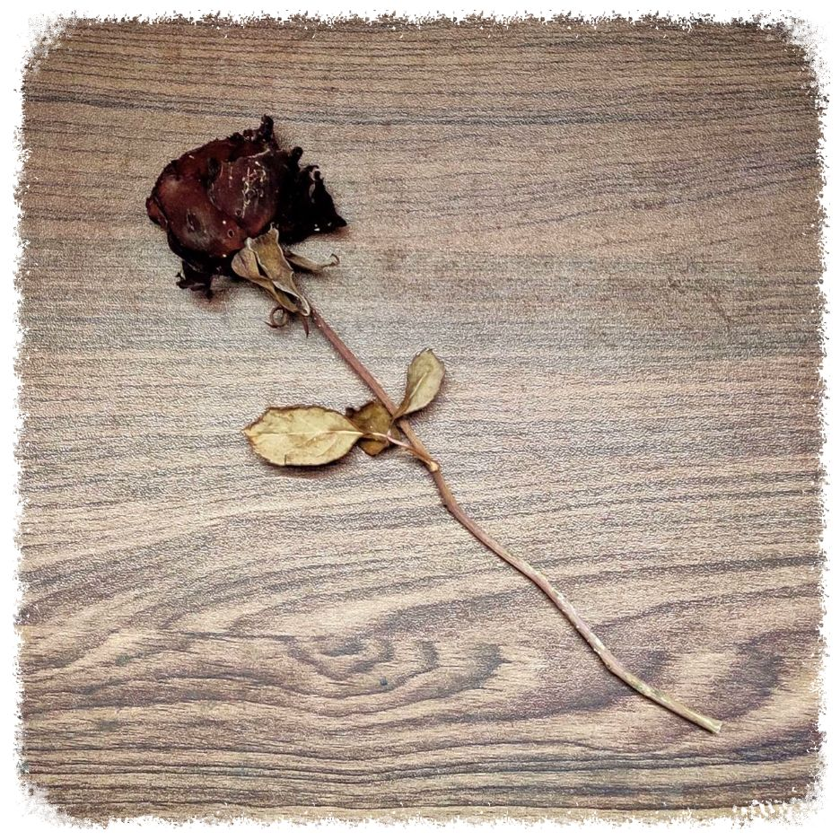

অপেক্ষা, অন্তহীন অপেক্ষা...
সঠিক সময়ের জন্য অপেক্ষা।
অপেক্ষা করছি, অপেক্ষা কোরো...
জানিনা এই লেখাটা কোনোদিন তোর চোখে পরবে কিনা। কখনো মন কেমনের
দিনে, কিংবা হয়তো বৃষ্টি ভেজা দুপুরের শেষে রোদ মাখা বিকেলে,
আনমনে, এই লেখা খুঁজে পেলেও পেতে পারিস। আমি আমার সমস্ত গভীরতা,
বোধ আর কল্পনা শক্তি উজাড় করে এই লেখা লিখলাম। জীবনের বিভিন্ন
স্তরে, ভিন্ন সময়ে, স্বতন্ত্র পরিস্থিতিতে বার বার এই লেখাটি পড়িস।
আমার বিশ্বাস, প্রত্যেকবার নতুন রূপে নতুন কিছু খুঁজে পাবি।
"আমি আমার ক্যারিয়ার নষ্ট করতে চাইনা"
আমরা দুজনেই ভিন্ন স্বাধের পড়াশুনো করি। হয়তো ভবিষ্যতেও তাই করবো।
সত্যিই, ইঞ্জিনিয়ারিং আর সাহিত্যের মধ্যে আপাত পক্ষ্যে বিন্দুমাত্র
মিল নেই। কিন্তু, প্রাথমিক স্তরে এই মনোভাব পোষণ করলে খুব ওপরে
ওপরে বিচার করা হবে। আমাদের সমাজের প্রত্যেকটা বিষয়, প্রত্যেকতা
সাবজেক্ট এসেছে ফিলোসফি বা দর্শন থেকে। হ্যাঁ, অঙ্ক বা বিজ্ঞানও
এসেছে দর্শন থেকেই। এবং প্রত্যেকটা বিষয়ের গভীরতা বাড়ার সাথে সাথে,
প্রত্যেকটা বিষয় একে ওপরের সাথে মিশে যাই। কিন্তু সেই সামঞ্জস্য বা
সেই মিল খুঁজে বের করার নিবিড়তা হাতে গোনা খুব কম মানুষ অর্জনকরতে
পারে। ঠিক সেই জন্যেই, সমাজের তথাকথিত সাইন্স-আর্টস-ইঞ্জিনিয়ারিং
এই ভেদাভেদটা বরাবরই কায়েম থাকে। তোর পড়াশুনো, তোর মতবাদ, তোর
ধারণা বা তোর বিশ্বাস, কোনোটাই আমি পাল্টানোর চেষ্টা করিনি। কখনো
করবোনা। আমি শুধু জানতে চেয়েছি তোর চিন্তা-ভাবনা গুলোর মূল উৎস ।
যুক্তি-তর্কের মধ্যে দিয়ে তোর বিশ্বাস, তোর মতবাদকে বারবার কাঠগড়ায়
তুলেছি। প্রতিনিয়ত বাজিয়ে দেখতে চেয়েছি তোর ধারণা গুলো কতটা
স্পষ্ট। তোর মতবাদ, তোর ধারণা আর তোর বিশ্বাস কে আমি সন্মান করি।
তোকে বার বার প্রশ্ন করে অপ্রস্তুত করেছি। তুই হয়তো অনেকবার ছোট
বোধ করেছিস, কিন্তু বিশ্বাস কর, আদতে আমি তোকে ছোট করতে চাইনি। আমি
শুধু চেয়েছি তোকে আরো ভালো করে জানতে, তোকে সবথেকে ভালো ভাবে
বুঝতে। আমি নিজে যা রাশভারী ব্যক্তি, আমি পড়াশুনো কিংবা ক্যারীরের
মাহাত্য সম্পূর্ণ রূপে বুঝি। হ্যাঁ, হয়তো এটা ঠিক যে আমার
উপস্থিতিতে তোর কর্মসূচি বা কাজ বাঁধা পাই, কিন্তু বিশ্বাস কর, তোর
জীবনে চলার পথে কাঁটা কিংবা বাধা হয়ে উঠবো না কখনো। তুই আমি দুজনেই
দুটো স্বাধীন ব্যক্তি, স্বাভাবিক ভাবেই দুজনের চিন্তা ভাবনা আলাদা
হবে। পিরিয়ডিক টেবিলে ১১৮ টি পদার্থ আছে। আর গোটা বিশ্বে যতগুলো
মানুষ-মানুষী আছে ঠিক ততগুলো মৌলিক মন, মৌলিক পদার্থ রূপে আছে।
পৃথিবী তে প্রত্যেকটা ব্যক্তি আলাদা। সবাই মৌলিক। হ্যাঁ, কারুর
সাথে কারুর চিন্তা ভাবনা কিছুটা মেলে, কারুর সাথে হয়তো একটু কম
মেলে, কিন্তু সম্পূর্ণ রূপে বরাবর কিংবা সমান মতবাদের কেউই নয়। ঠিক
সেরকম ভাবেই, আমরা নাহয় চিন্তা ভাবনায় একটু আলাদাই হলাম। কিন্তু
তাই বলে কি মন থেকে আলাদা? তাই যদি হতো তাহলে তুই এই লেখাটা পড়তিস
না। আমি তোর চলার পথে বন্ধু রূপে থাকতে চেয়েছি, তোর মনের জোর হতে
চেয়েছি। আমি সবসময় তোর পাশে আছি। তুই উন্নতি কর, এগিয়ে যা। আমার
শুভ কামনা সবসময় তোর সাথে আছে।
"আমায় বাঁচতে দে, আমি ভালো নেই"
আমি বরাবরই বিশ্বাস করি নিজের পায়ে দাঁড়িয়ে নিজের ইচ্ছে পূরণের যেই
আনন্দ, সেই সুখ পৃথিবীর আর কিছুতে নেই। নিজে সাবলীল হয়ে, নিজে
রোজগার করে নিজের শখ-আল্লাদ মেটানোর যেই তৃপ্তি সেটা যে নিজে অনুভব
করেছে, একমাত্র সেই আমার কথা হয়তো পূর্ণাঙ্গ রূপে বুঝতে পারবে। তুই
সিগেরেট খাবি কি খাবি না, চুলে রং করবি কি করবি না এগুলো সম্পূণই
তোর ব্যক্তিগত ব্যাপার। আমি শুধু এটুকুই বাতলেছিলাম যে নিজে
সাবলম্বী হয়ে, নিজের পায়ে দাঁড়িয়ে নিজের ইচ্ছেগুলো পূরণ কর । আমার
বিশ্বাস, শখ মেটানোর কোনো সঠিক বয়েস হয়না। আমাদের প্রকৃত শখ গুলো
সারাজীবন রয়ে যায়। আমার ধারণা এটুকুই যে, সঠিক সময়ে নিজের শখ নিজের
যোগ্যতাই পূরণ করলে আনন্দটা বহুধা বেড়ে যায়। এটুকু আমার বিশ্বাস
মাত্র। দ্বিমত হলে আমি সেটাও শ্রদ্ধার সাথে গ্রহণ করি। আমি তোকে
কখনো বাঁধা দিতে চাইনি, আমি শুধু তোকে সঠিক সময়ের জন্য অপেক্ষা
করতে অনুরোধ করেছি মাত্র। তুই ভুল বুঝেছিস যে আমি তোকে আটকাচ্ছি,
তোর ইচ্ছে পূরণে বাঁধা হয়ে দাঁড়াচ্ছি। পরজন্ম হয় কিনা জানিনা, আমরা
একবারই বাঁচি, সুতরাং নিজের মতন করে বাঁচায় আমি শ্রেয় বলে মনে করি।
জীবনযুধ্যে তোর পাশি আছি, সবসময় থাকবো। স্বয়ং সশরীরে না থাকতে
পারলেও, মানুষিক ভাবে, মন থেকে সবময় তোর পাশে আছি। তোর জীবনে, তোর
ক্যারীরের যাবতীয় ইচ্ছে আকাঙ্খা সম্পূর্ণ রূপে পূরণ হোক আমি সেটাই
কামনা করি। একসময় আমাকে প্রাণখুলে যা যা করতে চেয়েছিস বলেছিলি, সব
যেন পূরণ করতে পারিস, মন থেকে আমি সেটাই চাই। আমি কোনোদিন তোকে
বন্দি করে রাখিনি, রাখতে চাইনি। কিন্তু তুই বরাবরই নিজেকে আটক ভেবে
নিয়েছিস। আমার অধীনে তোর স্বাধীনতা বিচূর্ণ হয়েছে এগুলো সের্ফ তোর
কল্পনাপ্রসূত মনগড়া চিন্তা। হ্যাঁ আমি স্বীকার করছি একটা সময় আমি
তোকে বেশ কিছু কাজে বাঁধা দিয়েছি, বারণ করেছি করতে। কিন্তু
সেগুলোকে তুই নিজেই আল্টিমেটাম হিসেবে নিয়ে নিজে খারাপ থেকেছিস।
আমি আমার যুক্তি দিয়ে বিচার করে, আমার স্বাধীন মতামত টুকু তোর কাছে
তুলে ধরেছি। তুই কার সাথে মিশবি বা কোন নেশা করবি কিংবা কোন দলকে
সমর্থন করবি সেটা সম্পূর্ণ তোর ব্যক্তিগত ব্যাপার। আমি শুধু তোর
পছন্দ কে প্রশ্ন করেছি, তোকে জানতে চেয়েছি, বুঝতে চেয়েছি। সেই সময়
আমার যেগুলো ঠিক বলে মনে হয়নি, সেগুলো তে বাঁধা দিয়েছি। কিন্তু
সময়ের সাথে মানুষ বদলায়। আমার নিজেরই চিন্তা-ভাবনাই অনেক অনেক
পরিবর্তন হয়েছে। যা আমি কিছু বছর আগে কল্পনাও করতে পারতাম না,
সেগুলো আজ নির্ধিধায় করি। জীবনের মূল উদেশ্য নিজে ভালো থাকা আর
বাকিদের ভালো রাখা। তুই খারাপ থাক আমি কক্ষনো চাইনি। ভেবে দেখ তোর
খারাপ থাকার সিংহ ভাগ কারণ কিন্তু তোর নিজের মনের মধ্যেই লুকিয়ে।
তোর অভিমান, তোর পূর্বাশঙ্কা কিংবা তোর মনের ধারণার ভিত্তি করেই
তুই খারাপ থাকিস। একটু ভরসা কর। যেই মানুষটাকে আজও নির্ধিধায় নিজের
সব কিছু উজাড় করে দিতে বিন্দুমাত্র দ্বিধাবোধ করিস না, তাকে
একটিবার বিশ্বাস কর? ভরসা কর? ভালো বা খারাপ থাকা আমাদের মনের
অবস্থা মাত্র। আমাদের মন থেকে সব আশঙ্কা, ভয়, ত্রাস মুছে ফেললে
দেখবি তুই ভালোই আছিস। আমার উপস্থিতিতে তুই খারাপ আছিস এটা হতে
পারেনা। আমরা কথা বললে হাঁসি, আমাদের কথাপোকথন আজও ঠিক আগের মতন
স্নিগ্ধ। আমাদের আচরণ বা ভাব, সবই আগের মতনই মসৃন। শুধু কেটে গেছে
অনেকটা, অনেকটা সময়। কিন্তু আমাদের অভ্যেস রূপে ভালোবাসা আজও আগের
মতনই বিরাজমান।
"তোমাদের মধ্যে অনেক অমিল"
হ্যাঁ একদমই তাই, আমাদের মধ্যে অনেক অনেক অমিল। তুই ফিক্শন
ভালোবাসিস এদিকে আমি ভালোবাসি নন-ফিক্শন। জীবনে চলার পথে নানান
জায়গায় বহুরূপে বহুবার আমরা দ্বিমত পোষণ করেছি। চিন্তা-ভাবনাই আমরা
সত্যি অনেকটা আলাদা। তবুও, এত্ত অমিলের মধ্যেও যেই মিলটা সবচেয়ে
প্রকট তা হলো আমাদের একে ওপরের প্রতি বিনম্র ভালোবাসা। নির্ভেজাল,
নিঃস্বার্থ ভালোবাসা, একে ওপরের ভালো চাওয়া। একে অন্যকে জীবনে
উন্নতি করতে দেখে খুশি হওয়া। হাজার অশান্তি, ভুল বুঝাবুঝি আর
মনমালিনতার পরেও একে অপরকে দেখতে চাওয়া। লুকিয়ে লুকিয়ে খোঁজ নেওয়া,
এটুকুই মিল আমাদের। জীবনে চলার পথে দুজনের সমান মনোভাব কতটা
গুরুত্বপূর্ণ আমি সত্যি জানিনা, কিন্তু যা জানি তা হলো আমাদের
ভালোবাসার কাছে এই অমিল গুলো খুবই ক্ষুদ্র। আমরা দুজনেই শিক্ষিত
দুটো মানুষ। নিজেদের স্বাধীন মতামতন পোষণ করি। স্বাভাবিক ভাবেই,
মতের অমিল হওয়াটা বাঞ্চনীয়। তাই বলে দূরে সরিয়ে দেওয়াটা একান্তই
নির্বুদ্ধিতার প্রদর্শন। হ্যাঁ তর্ক হবে, কথা কাটাকাটি হবে। চায়ের
পেয়ালা হাতে ঘন্টার পর ঘন্টা আলোচনা হবে। সব শেষে যদি কোনো
সর্বসম্মত একমত সিদ্ধান্তে নাই আসতে পারি, তাহলে নিজেদের বিশ্বাস,
নিজেদের মতন করে এগুবো, নিজেদের বিচার নিয়েই পথ হাঁটবো। কিন্তু
আলাদা হয়ে নয়, হাতে হাত রেখে একসাথে হাঁটবো। কাঁধে কাঁধ মিলিয়ে
হাঁটবো। এড়িয়ে যাবো না কখনো। একটা সুন্দর, সুশৃঙ্খল মীমাংসায় আসবো।
সব মানুষ তো আর সমান ভাবে চিন্তা করে না, আমরা নাহয় অমিল নিয়েই পথ
হাঁটবো, কিন্তু আমাদের মিল আমাদের ভালোবাসার সাদৃশ্য, একে ওপরের
প্রতি শ্রদ্ধার আদল, দুজনের মনের গভীরের সাম্যতা কোনোদিনই আমাদের
অমিলকে ছাপিয়ে, আমাদের আলাদা করতে পারবে না। তা করতে দিতে পারিনা
আমরা। আমার বিশ্বাস মানুষিকতাই আলাদা হয়েও মন থেকে এক হওয়া সম্ভব।
দুজনে মিলে এই রূপ উদাহরণের নিদারুন নিদর্শন হয়ে উঠবো। হ্যাঁ, ঠিকই
সম্ভব।
"সব তো বদলে গেছে রে, এগুলো কি আদেও সম্ভব ?"
হ্যাঁ, সত্যি অনেক কিছু বদলে গেছে। পরিবর্তন অনিবার্য। সময়ের সাথে
সাথে মন, মানুষিকতা এমনকি মানুষ বদলে যায়। পরিস্তিতির চাঁপে নতুন
রূপে রূপান্তরিত হয়ে যায় আমরা। বার বার মরে যায়, বার বার শেষ হয়ে
আবার নতুন করে শুরু করি। এটাই তো জীবনের মৌলিক ধর্ম। ক্রমাগত
পরিবর্তনের মধ্যে দিয়ে আমরা বেড়ে উঠি, নিজেকে নতুন রূপে খুঁজে পাই।
নিজের মনের ইচ্ছে, নিজের চিন্তা ভাবনাকে ঘষে-মেজে নতুন প্রলেপ
লাগাই। হ্যাঁ, এগুলো সবই সত্যি। বৈচিত্রই জীবনে ধর্ম, এঁকে আটকানো
সম্ভব না, এড়ানোও সম্ভব না। পরিবর্তন কে আলিঙ্গন করে নেওয়াই আমাদের
কাম্য। তুবও, কিছু জিনিস পরিবর্তন হয়না। কোনোদিনই হয়না। তোকে আদর
করে যেই নামে ডাকি, সেই নাম আজও আমার মুখে শুনলে তোর বুকে হাহাকার
হয়। হু হু করে ওঠে বুকের ভেতর। হাজার পরিবর্তনের ভেতরেও, প্রাক্তন
প্রত্যেকটা অভ্যেস ঠিক আগের মতন স্থান পেয়েছে। বাড়ি ফিরে জানিয়ে
দেওয়া "reached", কিংবা নানান কথার প্রপাতে হঠাৎই - " তুমি বোলো"
বলে সম্ভোধন করা, এগুলো সবই অপরিবর্তনীয়। মানুষ বদলায়, পরিস্থিতি
বদলায়, শুধু অভ্যেস গুলো ভালোবাসা রূপে রয়েই যায়। হ্যাঁ সম্ভব,
ফিরে আসা সম্ভব , কিন্তু তার আগে রয়েছে একরাশ অপেক্ষা, সঠিক সময়ের
জন্য অপেক্ষা। আমাদের সব গেছে, ভালো মুহূর্ত, খারাপ লাগা, সবই
সময়ের ঘষা লেগে অশ্মীভূত হয়ে। কিন্তু হারিয়ে যায়নি কিছুই। দিনের
আলোর গভীরে সব তারাই বিরাজমান, তাই না? আমাদের একসাথে সাধন করার যা
যা ইচ্ছে আর মনোস্কামনা অসম্পূর্ণ হয়ে রয়েছে সব থেমে আছে সময়ের
অপেক্ষায়। ইচ্ছেগুলো আমার কাছে অমূল্য, আর কারুর সাথে বাস্তবায়িত
করতে চাইনা আমি। সম্ভব, সবই সম্ভব। শুধু প্রয়োজন অনেকটা মনের জোর,
বিশ্বাস আর অনেকটা বিশ্বস্ততা, আস্থা আর নির্ভরতা। অসম্ভব বলে কিছু
হয়না। মনের ইচ্ছের কাছে পৃথিবীর প্রত্যেকটা জিনিস হার মানতে বাধ্য।
মন থেকে কিছু চাইলে ঠিকই সম্ভব। আমরা দুজনে, যদি মন থেকে চাই,
হাজার ভুল বোঝাবুঝি, হাজার খারাপ লাগা, অগণিত বিনিদ্র রজনী পরেও সব
কিছুকে সম্ভব করে তুলতে পারি। সব কিছুকে সুস্থ স্বাভাবিক রূপে
ফিরিয়ে আনতে পারি, নতুন করে গড়ে তুলতে পারি আমাদের নিজেদের রাজ্য।
অসম্ভবের শৈলকে ভেঙে চূর্ণ করে মনের ইচ্ছে। আমরা মন থেকে যা চাইবো,
সেটাই হবে। মন থেকে আজও তোকেই চাই।
"তুই কোনোদিনই আমার মনের মতন হয়ে উঠতে পারবি না"
আমাদের কল্পনাপ্রবণ মনের দ্রুতগামী চিন্তাধারা ক্রমশই এঁকে চলে এক
হিজিবিজি কাঁটা আদর্শ মনের মানুষের ছবি। সব খোঁজাখুঁজির মধ্যে
সবচেয়ে বৃহৎ খোঁজা হলো নিজের মনের মানুষকে খুঁজে বের করা। লালন
গাইলেন - "মিলন হবে কত দিনে, আমার মনের মানুষের সনে?" সত্যি,
আমাদের মনের মানুষ কে? "আমি একদিনও না দেখিলাম তারে, আমার বাড়ির
কাছে আরশিনগর, ও এক পড়শি বসত করে।" আমাদের মনের মানুষ আমাদের
নিজেদের সত্তার ভেতরেই বিদ্যমান। মনের মানুষ আর কেউ নয় রে, আমরা
নিজেরাই। নিজেদের দেহ ভান্ডারের মধ্যে রয়েছে গোটা ব্রহ্মাণ্ড।
নিজেকে নিজে চেনা হলো সবচেয়ে বড়ো আবিষ্কার। দুর্ভাগ্যবসত, খুব কম
মানুষ নিজেকে নিজে চিনতে পারে। আমরা কে? এক অলীক প্রলেপে সারাজীবন
কাটিয়ে দি আমরা বেশিরভাগ মানুষ। এক কৃত্তিম খোলসের ভেতরে নিজেকে
গুটিয়ে ছলনার আবরণে বাস করি। নিজেকে নিজে চিনলে, তথা নিজের মনের
মানুষের অস্তিত্বকে উদ্ভাবন করলে প্রকৃত রূপে নিজের সাথে নিজের
বন্ধুত্ব স্থাপন করতে পারবি। এই গেলো নিজেকে খোঁজা। তারপরে আসে
নিজের মনের মতন কাউকে খোঁজা। বিশ্বাস কর, হাজার খোঁজা খুঁজি করেও
একদম হুবহু তোর মনের মতন মানুষকে খুঁজে বের করা দুরহ। জীবনের
বিভিন্ন স্তরে নানান মানুষকে তোর ভালো লাগবে, মনে হবে হয়তো -
"হ্যাঁ এই আমার মনের মানুষ"। কিন্তু না, তোর মনের মানুষ তুই নিজে,
বাকি সবাই তোর বন্ধু, তোর সহযোগী, শুভাকাঙ্খী। আর জীবনে যার সাথে
দীর্ঘ অনেক বছর কাটাবি, যাকে জীবনসঙ্গী রূপে বেছে নিবি, সেও কিন্তু
হুবহু তোর মনের মতন হবেনা কোনোদিনই। যেকোনো সফল সম্পর্কের কাঠগড়ায়
রয়েছে একরাশ আপস, বোঝাপড়া আর সবশেষে কিছু ক্ষুদ্র ত্যাগ বা
বিসর্জন। এই যে তোর জন্য এত্ত এত্ত কবিতা লিখলাম, গান লিখলাম, এই
লেখাটা লিখছি, সবই কিন্তু আমার মন থেকে লেখা। কষ্ট হলে হারমোনিকা
বজায়। পিয়ানো বজায় আজও, কিন্তু কাউকে শোনাবার লোক পাইনা। আমরা যখন
একসাথে ছিলাম, আমি আমার ক্যারিয়ার নিয়ে এতটাই ব্যতিব্যস্ত ছিলাম যে
আমার ভালোলাগা গুলো সব জলাঞ্জলি দিতে হয়েছিল। এখন আমি আবার ছবি
তুলি, গান গাই, লেখা লিখি করি। প্রচুর বই পড়ছি। সাহিত্যকে কাছ থেকে
বোঝার চেষ্টা করছি। বইয়ের পাতাগুলোকে নিজের জীবনধারণের মধ্যে দিয়ে
মিলিয়ে দেখছি, উপলব্ধি করার চেষ্টা করছি। আমার সাংস্কৃতিক দিক টুকু
তোর কাছে তুলে ধরার সদসময় আমি পাইনি। কিন্তু আমি সবময় তোর
ভালোলাগা, তোর ইচ্ছে, তোর সাধনা কে সম্মান করি, তোকে আরো ভালো করে
বোঝার জন্য তোর কাজ তোর পড়াশুনো কে নিজের জীবনে অনুভব করার জন্য
অনেক অনেক সময় অতিবাহিত করি রোজ। আমার বিশ্বাস, কোনোদিন ঠিকই আমি
তোকে সবচেয়ে ভালো ভাবে, সবচেয়ে কাছ থেকে বুঝতে পারবো, অনুভব করতে
পারবো। আমি সবসময় তোর মনের মতন হয়ে উঠতে চেয়েছি, আজও তাই চাই।
"তোর সাথে আমি কোনোদিন থাকতে পারবো না, আমি জানি"
পারবি, থাকতে পারবি। আমার সাথে তুই ঠিকই থাকতে পারবি। আমি জানি
সেটা। শুধু তোকে সেটা উপলব্ধি করাতে পারিনি এখনো। আমাদের গেছে যে
দিন, তাতে লেগে আছে অনেক ভুল ধারণা, পাহাড় সমান অভিমান আর অবশেষে
এক তৃতীয় ব্যক্তির দ্বারা কৃত্তিম ভাবে সৃষ্টি করা গাঢ কালো
কালিমালিপ্ত বিদ্বেষ আর পরস্পর প্রতি ভুল বোঝাবুঝি। দোষ দুজনেরই
ছিল কিন্তু সবচেয়ে বেশি দোষী আমরা দুজনেরই কেউই ছিলাম না।
পরিস্থিতি আমাদের বার বার আলাদা করেছে। আশঙ্কা, ভয় আর এক ঝাঁক ভুল
ধারণা আমাদের দূরে সরিয়ে রেখেছে। কিন্তু সত্যিই কি আমাদের অনেক
অনেক দূরত্ব বেড়ে গেছে? কই, আজও তো আমরা মন থেকে এক আছি, তাই না?
শুধু একসাথে সময়টা ব্যয় করতে পারছি না। মিলিত হতে পাচ্ছি না।
কিন্তু বিশ্বাস কর, এগুলো সবই সাময়িক। আমরা পারবো একসাথে থাকতে
সুখে শান্তিতে। আমাদের চিন্তাধারা আলাদা, মতামত আলাদা তবুও, মন
থেকে আমরা এক। দুজন দুজনের বেদনা, দুঃখ অনুভব করতে পারি আজও। তোর
কান্নায় আমার কান্না পাই আজও। তুই খারাপ থাকলে আমিও খারাপ থাকি।
হ্যাঁ এটাই সত্যি। আমরা চেয়েছিলাম একসাথে বেড়ে উঠতে। সমাজ আর
পরিস্থিতি আমাদের তার অনুমতি দেয়নি। আমাদের আলাদা হয়ে যেতে হয়েছে।
কিন্তু বৃহত্তর দৌড়ে, জীবনের অধিকাংশে আমরা পারবো একসাথে থাকতে।
তুই বলেছিলি তুই খুব খারাপ। আমাকে নিজেই বলেছিলি যে তুই একটা বাজে
মেয়ে। বিশ্বাস কর, তুই যেমন আমি সেরম ভাবেই তোকে ভালোবাসি। তোকে
সারাজীবন গ্রহণ করবো, বুকে টেনে নেবো। তোকে যত্নে রাখবো, ভালোবেসে
সবচেয়ে সুখী করে রাখবো। আমি পারবো, আমরা পারবো সব অসম্ভব কে সম্ভব
করতে। যুগে যুগে সত্যের সাথে অসত্যের যুধ্যে সত্যের জয় হয়েছে। সৎ
সবসময় অপরাজিত। আমাদের সৎ ভালোবাসা হেরে যেতে পারেনা এভাবে। আমরা
পারবো একসাথে থাকতে, শুধু সময়ের অপেক্ষা। প্রতীক্ষা, সঠিক সময়ের
জন্য। অপেক্ষা করছি, অপেক্ষা করিস…
"আমি আর কোনোদিন তোকে বিরক্ত করবো না, আর কোনোদিন তোর সাথে কথা
বলতে চায়না"
অনেকটা অভিমান, খারাপ লাগা আর অবচেতনে কথাটা বলেছিলি। অক্ষরে
অক্ষরে পালন করছিস বটে, কিন্তু মন থেকে যে পালন করছিস না আমি তা
জানি। যোগাযোগ ঠিকই করছিস না, কিন্তু ভুলেই কি গেছিস? কই, একাকী মন
খারাপের দিনে চুপি চুপি আমার খোঁজ নিস না? নিস যে না এ আমি মানতে
পারবো না। আমিও নি তোর খোঁজ। লোকে বলবে পিছুটান, আমি বলবো এটাই
ভালোবাসা। পাগলী, তুই যোগাযোগ করলে আমি বিরক্ত বোধ করিনা রে, বরং
খুশি হই। আমার সাথে কথা বলবি কি বলবি না সেটা সম্পূর্ণ তোর
ব্যক্তিগত ব্যাপার। ইচ্ছে হলে কথা বলিস, আমি সবসময় তোর
স্বছন্দবোধের অপেক্ষায় রয়েছি। একদিন ঠিকই সমাজবিধির নিয়মকানুন
ভেঙে, সব লোকের প্যানপ্যানানি বিরুধ্যে গিয়ে আমার সাথে যোগাযোগ
করবি, আমি জানি। অপেক্ষা করছি, সঠিক সময় এলে যোগাযোগ করিস।
“Hoping that this time, how hard they try to deviate me, I
myself would be strong enough to shield myself”
পাগলী রে, আমি তোকে কক্ষনো পথভ্রষ্ট করতে চাইনি। আমি যে তোকে
ভালোবাসি, তোর ক্ষতি কিকরে করবো বলতো? আমি জানি আমার উপস্থিতি তে
তুই বন্দি অনুভব করিস, হয়তো মনে করিস তোর ক্যারিয়ার এ আমি বাঁধা
হয়ে দাঁড়াবো। আদতে কিন্তু তা নয়। এসব সবই তোর মনের মধ্যের আশঙ্কা
আর ভুল ধারণা। মিছিলে-স্লোগানে, তর্কে-কাউন্টারে, ও এ টি তে কিংবা
সংস্কৃতিতে তোর পাশে কাঁধে কাঁধ মিলিয়ে চলতে চাই। তোকে দুর্বল করতে
চাইনা, বরং তোর মনের জোর হয়ে উঠতে চাই। কোনো মহৎ কাজ একাকী করা
সম্ভব নয়। আমি জানি তুই সমাজে পরিবর্তন আনতে চাস, আমিও চাই। একসাথে
আনতে চাই। এভাবে ভুল বুঝিস না আমায়। আমি তোকে বিচ্যুত করতে চাইনি
কখনো। তোর চলার পথে তোর সঙ্গী হতে চেয়েছি। ওপরে যে যায় বলুক, আমি
গভীরভাবে জানি তুই প্রেম থেকে বঞ্চিত, আদর ভালোবাসা অনেক পাওনা আছে
তোর। আমায় একদিন খুব আফসোস করে বলেছিলি, এখন আর কেউ তোকে বুকে টেনে
নেয়না, ভালোবাসে না। একসময় আমি টেনে নিতাম, আদোরে যত্নে
ভালোবাসতাম। এখনো তোকে বুকে টেনে নিতে ইচ্ছে করে, প্রাণ খুলে
ভালোবাসতে, আদর করতে ইচ্ছে করে। তোকে দুর্বল করে দেওয়ার জন্য নয়
রে, তোকে আরো এগিয়ে নিয়ে যাওয়ার জন্য, তোর মনের জোর বাড়ানোর জন্য।
তুই একজন স্বাধীন স্বতন্ত্র মানুষী হয়ে উঠতে চাস, আমি তা জানি।
কিন্তু স্বাধীন মানুষী কি একজন পুরুষের গভীর স্নেহ, আদর ভালোবাসার
যোগ্য নয়? তুই একাকী থাক, আমি তা কক্ষনো চাইনা। অন্য কোনো পুরুষের
বুকে আশ্রয় নে, সত্যি বলতে তাও চাইনা। আমি তোর নির্ভরতার কাঁধ হতে
চাই, তোর আশ্রয়ের বুক হতে চাই যেখানে মাথা পেতে নির্ধিধায়, আরামে
আলগোছে ঘুমোনো যায়। আমায় ভুল বুঝিস না, আমি তোকে দুর্বল বা নিস্তেজ
করতে চাইনা, তোর তেজ্বস্বীনি হয়ে ওঠার অন্যতম কারণ মাত্র হতে চাই ।
সেই কোন কথা নেই মুখে
শুধু চুপচাপ বসে থাকা
ছিল যার যার ব্যাথা তার তার বুকে
ছড়িয়ে ছিটিয়ে রাখা
আমি ভাবিনি তখন ভুলেও এমন
দুজন দুদিকে যাবে
বুঝিনি আমার হৃদস্পন্ধন
আমার অচেনা হবে।
এই বিভক্ত পৃথিবীতে
বড় শক্ত বাধন ছিল
হল অহংকারের জয়
সেই বন্ধন ছিঁড়ে গেল।
সেই অহংকারের খেলায় দুজনে
জিতে গেছি একসাথে,
প্রতি ইটের জবাব পাথরে দিয়েছি
বিজয়ের মালা হাতে !
সেই বিজয়উল্লাস প্রতিদ্ধনিত
মূর্ত আর্তনাদে
আজ বুকের ভিতর মিষ্টি একটা
শৈশব শুধু কাঁদে।
আজ অবেলার অবসরে,
কেন লাগছে ভীষণ একা
কত হাজার বছর তোর হাতটাকে
হয়নিত ছুঁয়ে দেখা।
আমি কত-কতবার আঁকি তোর ছবি
অঘোর কল্পনাতে
আজও জলে যাই, আজও পুড়ে যাই
তোর দুচোখের অবসাদে।
দেখ, নীল নীল নীল আকাশের মত
অনন্ত হাহাকার
আজ বুকের ভেতর ভাঙ্গছে-ভাঙ্গছে
ভেঙ্গে সব চুরমার।
কোন শত্রুরও যেন প্রানের বন্দু
এমন দুরে না যায়
শোন বন্ধু কখনো কোন বন্ধুকে
বলোনা যেন বিদায়

The Intimate Rose
তুই বলেছিলি আমার চোখে তুই কোনোদিনও রূপসী হতে পারবি না। এই ধারণা
যে কতটা ভুল আমি লিখে প্রমাণ করতে পারবো না। বিশ্বাস কর আমার চোখে
তুই সবচেয়ে সুন্দর মানুষী। মনে আছে, ক্লাস ৯ এ আমি তোকে অঙ্ক করে
দিতাম? এক-দুবার ফিজিক্স-কেমিস্ট্রি ও পড়িয়ে দিয়েছি। তোদের বাড়ির
সামনের মাঠে সকাল বেলা ফুটবল খেলতে যেতাম দল বেঁধে। তুই ব্যালকনি
থেকে উঁকি মেরে আমায় খুঁজতিস। একবার ছবি তুলতে বেরিয়ে বৃষ্টিতে
ভিজে তোর বাড়ি গেছিলাম ছাতা নিতে। অবিশ্যি ছাতা নিতে আদতে যায়নি,
গেছিলাম তোকে দেখতে, তোর সান্নিদ্ধ পেতে। তুই একবার স্বপ্নে
দেখেছিলি যে তুই প্রসব করছিস আর আমি তোর হাত ধরে পাশে দাঁড়িয়ে আছি।
আমাদের সন্তান পৃথিবীর আলো এই ভাবেই দেখবে তুই কল্পনা করেছিলি।
যেদিন খুব উৎসাহের সাথে তুলনামূলক সাহিত্যের সিলেবাসটা সবাইকে পড়তে
পাঠিয়েছিলি, কেবল আমি একমাত্র পুরো সিলেবাসটা পড়েছিলাম। যেবার
তোদের করোনা হলো, আমার অ্যাডভান্সড এর প্রস্তুতির মধ্যে রোজ তোর
মনের জোর বাড়াতে তোর সাথে কথা বলতাম, সাহস যোগাতাম। তোর
সাইকিয়াট্রিক ওষুধ গুলো কোনটা কি করে, কোনটার কি কাজ আমি প্রথম
খুঁজেছিলাম। তোর মূল মানুষিক সমস্যা নিয়ে পড়াশুনো করে তোকে
জানিয়েছিলাম আমি। যেদিন বেথুনে কিংবা যাদবপুরে প্রথম নামের লিস্ট
এসেছিলো আমি প্রথম তোর নামে খুঁজে তোকে জানিয়েছিলাম। যাদবপুরের দুই
ক্যাম্পাসে প্রথম পা রেখেছি তোর হাত ধরে । মধ্যে যখন গ্রামেরবাড়ি
থাকতাম, নেটওয়ার্ক থাকতো না, শীতের রাত্রে একা ছাদে উঠে ঠান্ডার
মধ্যে মশার কামড় খেয়ে তোর সাথে নির্ধিদায় কথা বলে গেছি। কলেজে উঠে
আমি জানতাম তোদের ফার্স্ট সেমেস্টার এর পড়াশুনোর সাথে ইন্ডিয়ান
মিউসিয়াম এর ছবির অনেক অনেক সামঞ্জস্য আছে, তোকে নিয়ে গেছিলাম তুই
খুব খুশি হয়েছিলি। মনে আছে তুই আর প্রজ্ঞা একবার কম্পেটিশন করেছিলি
যে কার বর ডিম ভাজবে? তোর জন্য অনেকটা সাহস জুগিয়ে জীবনে প্রথমবার
ডিম ভেজেছিলাম। দুজনে মিলে পাড়ার লাইব্রেরির কার্ড করেছিলাম।
একসাথে বই তুলতাম। একবার দুজনের কার্ড বদলাবদলি হয়ে গেছিলো, তোর
নামে আমি বই তুলে ফেলেছিলাম। লাইব্রেরিয়ান বললেন -
"কি বা হবে, দুটো বই তো শেষমেশ সেই একই ঘরেই যাচ্ছে"। সেবার
তোর ঠোঁটের কোনে হাসিটা আজও আমার স্পষ্ট ভাবে মনে আছে। তোকে আমার
সাইকেলের ক্যারিয়ারে বসিয়ে কত্ত ঘুরেছি। একবার সাইকেলে ঘুরতে ঘুরতে
বৃষ্টি নেমে গেলো, দুজনে মিলে বৃষ্টিতে ভিজেছিলাম একসাথে। সন্ধ্যে
বেলা কাটাতাম ধোপাপুকুরের ধারে হাতে হাত রেখে আলোকপ্রদর্শনী দেখে।
প্রথম প্রথম তুই শাড়ী পরে ভালো ভাবে হাঁটতে পারতি না। তখন সবে সবে
কলেজে উঠেছি দুজনে। একদিন একসাথে হাঁটতে হাঁটতে তুই হুমড়ি খেয়ে পরে
যাচ্ছিলি, আমি দুহাত দিয়ে সযত্নে তোকে ধরে নিয়েছিলাম, পরে যেতে
দিনি। কলেজে উঠে ফাঁকা পকেটে, ট্রেনে, বাসে, ট্রামে, মেট্রোতে
ঝুলতে ঝুলতে কলকাতা ঘুরেছি একসাথে। প্রথম চিড়িয়াখানা গেছি একসাথে।
ফেরার পথে, ময়দানের খোলা মাঠে, তোর কোলে মাথা রেখে ভিটোরিয়ার
পরীদের দেখেছি। সেবার চোখের কোনে জল এসেছিলো দুজনেরই। কম পয়সায়
নন্দনে একসাথে কত্ত সিনেমা দেখেছি। প্রথম চাইনিজ খাওয়া শিখি তোর
হাত ধরে। নন্দনে গেলে টিবেটিয়ান ডেলাইট, বড়ো বাজার গেলে টুং নাম আর
কলেজ স্ট্রিট গেলে গুঞ্জন। একসাথে প্রথমবার খেয়েছিলাম গোলবাড়ির কষা
মাংস। একসাথে খেয়েছি প্যারামাউন্ট এর শরবত। মধ্যে ওজন বেড়ে যাওয়ায়
দুজনে মিলে সকালে বা সন্ধ্যেতে হাঁটতে যেতাম। দুজনে হাঁটতে হাঁটতে
হটাৎই একদিন খুঁজে বের করলাম গরম কেটলি। তুই আমাকে কেক বানিয়ে
খাওয়াবি বলে রাতবিরেতে দম দমের অলি-গলি ঘুরে একসাথে কেক বানানোর
সরঞ্জাম কিনে এনেছিলাম। তোর হাতেই জীবনে প্রথমবার পাস্তা
খেয়েছিলাম। কেক, কফি, চকলেট, পাস্তা, বিরিয়ানি নাজানি আরো কতকিছু
নিজে হাতে বানিয়ে আমাকে খাইসেছিস। আমি তোকে ডিম্ ভেজে খাওয়াতাম।
একবার দুজনে মিলে একসাথে ময়দা মেখে লুচি ভেজেছিলাম। গোল বৃত্তাকার
হয়েছিল না ঠিকই কিন্তু তাতে ছিল অনেক অনেক আন্তরিকতা আর ভালোবাসা।
তুই দক্ষিণীতে গান শিখতে চেয়েছিলি। একদিন দুজনে মিলে অনেক খুঁজে
খুঁজে বের করেছিলাম দক্ষিণী। গান্ধী ঘাট গিয়ে জেটি করে একসাথে
প্রথমবার গঙ্গা পারাপার করে গেছিলাম দা ডেনমার্ক ট্যাভার্ন।
সার্কুলার রেলওয়ে করে প্রিন্সেপ ঘাট গিয়ে হাতে হাত ধরে একসাথে
গঙ্গার ঘাট ধরে যে কত্ত হেঁটেছি তার ঠিকানা নেই। দূর্গা পুজোর আগে
একসাথে প্রথমবার কুমারটুলি গিয়ে ঠাকুরগড়া দেখেছিলাম। তারপরে
গেছিলাম নিউ মার্কেট একসাথে কেনাকাটা করতে। পুজোতে প্রথমবার
রোয়ালের বিরিয়ানি আর মটন চাপ খেয়েছিলাম। সেবার একসাথে এত্ত
হেঁটেছিলাম যে শেষমেশ তোর পায়ে ফোঁসকা পরে ব্যান্ড এইড লাগাতে হলো।
একাডেমী তে একসাথে প্রথমবার মাধবী নাটক দেখেছি। মোহরকুঞ্জে হাতে
হাত রেখে একসাথে ঘন্টার পর ঘন্টা বসে থেকেছি। স্বরস্বতী পুজোয়
একসাথে প্রথমবার পার্কস্ট্রিট সেমেটারি গেছিলাম। প্রথম লেকে
গেছিলাম তোর হাত ধরে, প্রথম বীফ, প্রথম পর্ক খেয়েছি তোর সাথে।
জীবনের প্রথম চুম্বন, প্রথম নগ্নতা অনুভব করেছি তোর সাথে। না জানি
আরো কত প্রথম তোর সাথে ভাগ করে নিয়েছি। তোর দেওয়া গোলাপ আজও আমার
স্টাডি তেই রাখা আছে। আমার ব্যাগের ভেতর তোর দেওয়া শামুক আর টেডি
রিং সর্বদাই নিয়ে বহন করি। আমাদের সব প্রতিশ্রুতি আজও আমি অক্ষরে
অক্ষরে নিখুঁত ভাবে পালন করি, ভবিষ্যতেও করবো। এই যে আমার এই
ওয়েবসাইট এ নিজের যেই লাল জামা পরে ছবি দেওয়া, এই লাল জামাটাও সেই
তরি পছন্দ করে দেওয়া জামা। নিউ মার্কেট থেকে দুর্গাপুজোর আগে
কিনেছিলাম। এই জামা পরেই আমার সব ইন্টারভিউ দিয়েছি, জীবনের প্রথম
চাকরিটা পেয়েছি। এই জামাটাও আমার কাছে খুবই কাছের। তোর স্ট্রেচ
মার্কের ছবি আজও আমার কাছে যত্ন করে রাখা আছে। আজও মন খারাপের সময়
আমি প্রত্যেকটা রেখায় হাত বুলোই। তোর ঘামের তীব্র গন্ধের ঘ্রান
নিতে আমার ভালো লাগে। তোর বমি আমি দুহাত পেতে নিয়েছি, সেটাও আমার
কাছে খবুই আপন বলেই মনে হয় । জানিনা কিভাবে তোকে অনুভব করাবো যে
আমার কাছে তুই কতটা কাছের, কতটা সুন্দর। তোকে সবচেয়ে বেশি
ভালোবাসি, এটুকু বিশ্বাস করিস।
দিল্লি থেকে ফেরার পথে তোর জন্য একটা চিঠি লিখেছিলাম। লিখেছিলাম
এয়ারপোর্টে বসে আর বাকিটা এরোপ্লেনের ভেতরে বসে। শীতের রাতে মশার
কামড় খাওয়া থেকে শুরু করে এরোপ্লেনের ভেতরে সব জায়গায় আমার
ভালোবাসা ছাপ রয়ে গেছে।
আমার প্রথম চিঠির উত্তরে কাকিমা লিখেছিলেন যে কাকু-কাকিমা চান, তুই
যেন আর্থিক ভাবে নিজের পায়ে দাঁড়িয়ে সাবলীল হতে পারিস। তারপরে তোর
জীবনের যাবতীয় সিদ্ধান্ত তুই নিজেই নিবি, ওনারা তোর জীবনে
হস্তক্ষেপ করবেন না। কলেজের প্রথম দিন থেকে নিজের খরচা বহন করার
জন্য তোকে কনটেন্ট রাইটিং পেশার সাথে পরিচয় করিয়ে দি। অনেক অনেক
আগে তোর LinkedIn একাউন্ট বানিয়ে দিয়েছিলাম। তোর জন্যে প্রথম
রেসুমে বা কারিকুলাম ভিটে বানিয়ে দিয়েছিলাম। আমার জানার গন্ডির
ভেতরে যাবতীয় যা যা সুযোগ - সুবিধা হয় সব তোর সাথে ভাগ করে নিয়েছি।
একদিন উচ্চ শিক্ষার জন্য অনেক অনেক ঘাটাঘাটি করেছিলাম দুজনে। অন্য
একদিন সুদীপ্তা কে সাথে নিয়েছিলাম ওর মতামত জানতে। আমি নিজে যা যা
শিখতাম সেগুলো তোকে সহজ ভাষায় বোঝানোর চেষ্টা করতাম। একদিন তোকে
ব্লক চেন বুঝিয়েছিলাম। তোর মুখে ব্লক চেনের কথা শুনে বড়মামা অবাক
হন। কলেজ প্রেমে এত্ত বিস্তর আলোচনা কতজন করে আমার সত্যি জানা নেই
। আমরা কি শুধুই প্রেম করেছি, নাকি করেছি আরো অনেক কিছু? ভেবে
দেখিস একটু…
তোর ভাই গদাই এর বেড়ে ওঠার সাক্ষি আমি। মেসেঞ্জার খুঁজে কত্ত
পুরোনো ছবি ভিডিও পাবো গুনে হয়তো শেষ করা যাবেনা। তোর ছোট ভাই চকো
আর কুমুদিনী কেউ শুরু থেকে দেখেছি। বিশ্বাস কর তাদেরকেও আমি নিজের
ভাই বলেই মানি। ভালোবাসি তাদের, স্নেহ করি তাদের। একটা সময় আমি
তোকে বলেছিলাম আমি কাকু কাকিমা আর তোর মাসিদের নিজের বলে মনে করি।
তোর মা কে আমার মা বলে মনে করি। ঠিক তাই জন্যেই কাকিমাকে বহুবার
আমাদের অনেক কিছুই খুলে বলে ফেলেছি অনেকবার। আমি যে আমার মা এর
সাথে এতটাই উন্মুক্ত। জানিনা তারা আমাকে তাদের পুত্র বলে গ্রহণ
করেছেন কিনা কখনো। আমি শুধু তোকে ভালোবাসিনি, ভালোবেসেছি তোর গোটা
পরিবার কে। বড়মামা, কুন্তল কে আমি শ্রদ্ধা করি। হ্যাঁ মুখের ওপর
তাচ্ছিল্ল করেছি, কিন্তু তাদের জ্ঞান আর গভীরতাকে আমি সম্মান করি।
মানুষ একা থাকতে পারেনা। ঠিক সেই জন্যেই জোট বেঁধে থাকে। পরিবার
সম্পর্ক সবকিছুর প্রয়োজনীতা আছে বলে আমি মনে করি। তুই বিয়ে করবি না
বলেছিলি। তোর ওপর অনেক অনেক দায়িত্ব রয়েছে। নিজের পায়ে সম্বলবী হয়ে
মা - বাবাকে আর্থিক ভাবে সাহায্য করা। নিজের দুই ভাই কে সামলে
রাখা। মাসিদের শেষ বয়েসে খেয়াল রাখা। মেজদির তোরা ছাড়া কেউ নেই,
আমি জানি সেটা। নিজের এম্বিশন আর ইচ্ছে গুলো পূরণ করেও অনেক অনেক
দায়িত্ব আছে তোর ওপর, আমি জানি সেটা।
কাকিমা বলেছেন তোকে তোর মতন ছেড়ে দিতে, তুই নিজের পড়াশুনো নিজের
ক্যারিয়ার বুঝে নিতে পারবি। আমি চেয়েছিলাম আমাদের একসাথে বিকাশ
হোক। দুজনে মিলে একটা বেঞ্চমার্ক তৈরী করতে চেয়েছিলাম, আজও তাই
চাই। কিন্তু পরিস্থিতি হয়তো তা হতে দেবে না। আমার শুভ কামনা সবসময়
তোর সাথে আছে। তুই জীবনের পথে এগিয়ে যা, উন্নতি কর সেটাই চাই আমি।
কিন্তু নিজের পায়ে দাঁড়িয়ে , সাবলম্বী হয়ে আর্থিক ভাবে স্বচ্ছল হয়ে
ফিরে আয় আমার কাছে। সঠিক সময় কোনটা? আমার বিশ্বাস তুই নিজের পথ
নিজে বেঁছে নিয়ে নিজের পায়ে দাঁড়িয়ে সাবলম্বী হয়ে উঠতে পারবি ।
মাস্টার ডিগ্রী কর, পারলে পি এইচ ডি কর। আমি জানি তোর ইচ্ছে পূরণের
জন্য উচ্চ শিক্ষা প্রয়োজন, তবে তাই কর। মন দিয়ে পড়াশুনো কর , তার
সাথে সাথে activistic কাজ কর। নিঃস্বার্থ ভাবে সমাজের কল্যাণ করতে
নিজেকে উজাড় করে দে। কিন্তু অপেক্ষা করিস আমার জন্য।
আমি পড়াশুনো করছি মন দিয়ে। পরিকল্পনা অনুযায়ী আমি ভারতেই থাকবো।
হ্যাঁ, হয়তো উচ্চ শিক্ষার জন্যে বিদেশ যাবো কিন্তু ভারতের মাটিতে
থেকে ভারতের জন্য কিছু করে যেতে চাই। ভারতে জন্মেছি, ভারতেই শেষ
নিস্বাশ ত্যাগ করবো। আমি পি এইচ ডি করবো, আরো পড়াশুনো করবো। তুই
জিজ্ঞেস করেছিলি যদি সংসার না করি, এত্ত টাকা ইনকাম করে কি বা
করবো? আমি সমাজকে সাহায্য করতে চাই, কিন্তু তার আগে নিজেকে
প্রতিষ্ঠিত করতে হবে যে। আমি বৃক্ষের মতন মানুষ হতে চাই, যার ছায়ায়
মানুষ আশ্রয় পাবে, নিজেদের অগ্নি ও অশ্রু জমা করে দেবে। কিন্তু সময়
লাগবে, দীর্ঘদিন কঠোর পরিশ্রমের মধ্যে দিয়ে কষ্ট সাধনের মধ্যে দিয়ে
আমার লক্ষ্যে পৌঁছতে হবে। কিন্তু অপেক্ষা করবো তোর জন্যে, সবসময়
করবো।
আমাদের মনে মনে বিয়ে হয়েছিল এক দেশাত্মবোধক রাত্তিরে। আজও সেই
বন্ধনে জড়িয়ে আছি আমরা। মন থেকে তুই আমার সঙ্গিনী। রিচুয়ালিস্টিক
ভাবে আমাদের বিবাহ কোনোদিন হবে কিনা জানিনা, কিন্ত আমার যাবতীয়
কর্তব্য আমি পালনা করবো, করতে চাই। বিশ্বাস কর, আমি সবসময় তোর পাশে
আছি, পাশে থাকতে চাই। একটা সময় তুই বলেছিলি আমাদের সন্তানকে আমার
মতন একাকিত্বে যাতে ভুগতে না হয়, তুই তোর ক্যারিয়ার জলাঞ্জলি দিয়ে
গৃহবধূ হয়ে থাকবি সারাটাজীবন। তুই যেভাবে থাকতে চাইবি, সেভাবেই
থাকিস। কিন্তু একা থাকিস না। আমাদের অতিবাহিত সময়ের সীমারেখায় অনেক
অনেক নতুন মুখোমণ্ডলী আসবে, অনেক কে ভালো লাগবে, হয়তো দুর্বলতা
জন্মাবে, ভালো বেসেও ফেলতে পারি কাউকে। ভালোবাসা জীবনে হয়তো বহুবার
আসে, কিন্তু মন থেকে জীবনসঙ্গী কিন্তু এক এবং অদিত্বিয় হয়।
আমি তোকে বলেছিলাম একদিন তোর জন্যে কিছু লিখবো যেটা গোটা বিশ্ব
পড়বে, প্রশংসা করবে। আজ আমি সারাটাজীবন তোর সাথে থাকার প্রতিশ্রুতি
দিচ্ছি। আমি প্রতিজ্ঞা করছি তোকে সারাটা জীবন আমার হৃদয়ে বহন করবো,
তোকে আজীবন ভালোবাসবো , উৎসাহ দেবো। তোর স্বতঃস্ফূর্ততার কারণ হয়ে
উঠবো, তোর জীবনে সব উদ্দমে তোর পাশে থাকবো। আমি তোর পরিপূরক হয়ে,
তোকে সারাটা জীবন আগলে রাখবো, তোর ওষুধ গুলো সবসময় তোর হাতের কাছে
এগিয়ে দেবো। আদোরে, অনুরাগে তোকে যত্নে ভালোবাসবো, তোকে ভালো
রাখবো। ভালোবেসে প্রত্যেক রাত্রে তোর ললাটে চুম্বন করবো। তোকে বুঝে
চলবো, প্রত্যেকটা ক্ষুদ্র প্রচেষ্টা কে যথাযত মর্যাদা দেবো। জীবনে
এগিয়ে যেতে তোকে সাহায্য করবো। তুই যেমনটি , ঠিক তেমনি ভাবেই আমি
তোকে গ্রহণ করবো সারাটাজীবন। কাকু-কাকিমাকে নিজের মা বাবার মতন করে
যত্নে দেখে রাখবো। বড়দি - মেজদির খেয়াল রাখবো। গদাই, চকো আর
কুমুদিনী কে সারাজীবন স্নেহে ভালোবাসায় আগলে রাখবো। তোর পরিবারকে
নিজের করে নেবো। সবার সাথে মিলে মিশে সবাইকে সম্মান আর শ্রদ্ধা করে
একসাথে জীবনযাপন করবো। আমার মা, দিদি, ঠাকুমা, জেম্মা সবাই তোকে
খুব খুব ভালোবাসে, স্নেহ করে। তারা সবাই তোকে খুব যত্নে রাখবে। এই
কথা গুলো আমি মন থেকে বললাম, ভরসা করিস, বিশ্বাস করিস। হ্যাঁ, আমি
এও জানি আমাদের গেছে যে দিন, তাতে সব কিছু নতুন করে ঠিক ভাবে শুরু
করা মুশকিল, কিন্তু অসম্ভব কিছুই নয়। মন থেকে চাইলে সবই সম্ভব। আমি
পুরোনো সব ঘটনা কিছুই ভুলে যায়নি, বরং তার থেকে শিক্ষা নিয়ে নতুন
করে তোর সাথে শুরু করতে চাই। হাজার অভিমান, অজস্র খারাপ লাগার পরেও
তোর কাছেই বার বার ফিরে আসতে চাই। আজ গোটা দুনিয়ার সামনে প্রস্তাব
দিচ্ছি তোকে :
আমার সাথে পরিবার গঠন করবি ? হবি আমার দত্তা ?
এই লেখাটা সারাজীবন রয়ে যাক আমার ওয়ালে। নরেন্দ্রপুর থাকাকালীন
নিজের ক্যারীরের খাতিরে তোর সাথে যোগাযোগ বিচ্ছিন্ন করে দিয়েছিলাম।
নিজের জায়গা গড়ে তুলে আবার তোর সাথে যোগাযোগ করেছি। এবার তোর পালা।
সঠিক সময় এলে উত্তর দিস, অপেক্ষা করবো আজীবন। তোকে ছাড়া আর কাউকেই
চাইনা নিজের বান্ধবী, প্রেমিকা কিংবা জীবনসঙ্গী রূপে। তুই বলেছিলি
"কেটে গেছে ৯ টা মাস, বদলে গেছে অনেক কিছু"। উত্তরে আমি
বলবো,
"৯ টা মাস কিরে, ৯ বা ৯০ বছরও তোর অপেক্ষায় কাটিয়ে দিতে
পারি।"
তুই বলেছিলি,
"আমাদের সবই তো হলো, হাসি-কান্না, ভালোলাগা-খারাপ লাগা,
সুখ-দুঃখ সবই তো ভাগ করে নিয়েছি। নতুন করে আর কি আর কিছু হওয়ার
আছে ?"
উত্তরে আমি বলবো,
"হ্যাঁ আছে। একসাথে কৈশোর পেরিয়েছি আমরা। একসাথে যৌবন আর
বার্ধক্য অনুভব করা বাকি আছে। একসাথে বৃহত্তর পৃথিবী দেখা বাকি
আছে। বাকি আছে একসাথে জীবনের বাকি প্রথম গুলোর আনন্দ ভাগ করে
নেওয়া। বাকি আছে আমাদের সন্তানের মুখটি একসাথে দেখা। একসাথে
আদোরে ভালোবাসাই একটা সুন্দর সুস্থ পরিবার গঠন করা। আর অবশেষে
একসাথে মৃত্যু ভাগ করে নেওয়া। আমরা প্রতিজ্ঞা করেছিলাম একসাথে
বাঁচবো, একসাথেই মরে যাবো। আমি আজও সেটাই চাই। বাঁচলে তোর সাথেই
বাঁচবো নাহলে একাকী আজীবন তোর অপেক্ষায় কাটাবো।"
সুস্থ থাকিস, ভালো থাকিস।
ইতি,
তোর মুনু
পুনশ্চ,
তোর কাছে আমি আজীবন তোর ভালোবাসার মুনু রয়ে যাবো। যা পরিস্থিতি
আসুক, তুই আমি জীবনে যতদূর এগিয়ে যায়না কেন, তোর কাছে আমি সবসময়
তোর মুনুই থাকবো। নাম, খ্যাতি, যশ জীবনে আসুক আর নাই বা আসুক, তোকে
ছাড়া জীবনটা বড্ডো ফাঁকা। যেকোনো পরিস্থিতিতে বা যেকোনো সময়ে মন
চাইলে যোগাযোগ করতে দ্বিধাবোধ করিস না, আমার কাছেও তুই আজীবন আমার
ছোট্টবেলার স্নেহের, ভালোবাসার রুকু।
অষ্টমীর দিন আসবে বলেছো। পথ চেয়ে থাকবো। না এলে কিন্তু আড়ি, আড়ি,
আড়ি। তুমি বড় মিথ্যেবাদী। গত মাসে সাত খানা চিঠি দিয়েছো। আটখানা
দেবার কথা ছিল। সত্যি, তোমার কথার কোনো ঠিক নেই। এসে অব্দি দিন
গুনছি। আর শেষে যদি না আসো...। আর সেই পাশের বাড়ির মেয়েটির কথা
ভেবে হিংসে হয়। কেনো জানো ? সে যে তোমায় সকাল সন্ধ্যে দেখে। আমি
তো দেখিনা। এ ভারি অন্যায়। জানলাটা বন্ধ করে রেখো। আর বেশি কি
লিখবো। আমার কথাটি ফুরোলো। আর অনেক বানান ও ভুল হলো। জানি তুমি
হাসবে। তা হেসো। আমি তো বই লিখিনা। চিঠির পক্ষে এই ঢের। তোমার
শরীরের যত্ন নিও লক্ষ্মীটি। আমার শরীর ভালো। মনের অসুখ সারবে তুমি
এলে। আসবে তো ? না এলে কিন্তু আড়ি, আড়ি, আড়ি।
একমাত্র তুই আমাকে সারিয়ে তুলতে পারিস।
আজীবন তোর অপেক্ষায় রইলাম...
১৭ই মাঘ, ১৪২৯ বঙ্গাব্দ
31st January, 2023
Praises
Your hair, a river of gold
I run my fingers through, so bold
Soft and silky, a delight
I could do this all night
Your smell is like no other
A unique and perfect blend
I am addicted to your fragrance
Till the very end
With every breath, I am reminded
Of the love that we share
Your smell, a constant reminder
Of how much you mean to me, my dear
Your stretchmarks, a story to tell
Of life and love, so well
I trace them with my fingertips
Reminding me of all you've been through
And how strong and beautiful you are
Marks, a map of your journey
I trace each line and feel the love within
I tickle your skin and hear your laughter
And at that moment, our hearts begin to spin
I hold you close, in a tight embrace
Feeling your heartbeat against mine
With every hug, I feel your love
And I'm grateful you are mine
With every touch, every kiss
I am reminded of how much I love you
You are my everything, my reason to live
Forever and always, my heart belongs to you
Bound By Love
Two paths may diverge, and our careers may lead
To separate destinations, with different needs.
But love remains the constant, a steadfast tie,
That draws us back together, beneath the blue sky.
With each step, our hearts beat as one,
Inseparable, though our paths may run,
We may be far but never gone,
For our love will always carry on.
The winds of change may come and go,
But our love will weather any storm, you know,
Through highs and lows, it will only grow,
Darling believe in destiny and just go slow
Our work may differ, with diverse aims,
But in our hearts, we share the same last names.
For love is stronger than the miles between,
It lasts a lifetime, a boundless dream.
Darling trust in our love and keep up your chin,
For it will guide us, through thick and thin.
And though we may be far, it brings us near,
For love endures, and will always be here.
Oh My Lady
My lady, oh my lady, fairest of them all,
With eyes that sparkle like the stars in fall,
Your hair a cascade of golden light,
Your smile, a beacon in the darkest night.
Your voice, a symphony that fills my ears,
Your touch, a warmth that banishes my fears.
In you, my heart has found its home,
With you, I'll never feel alone.
Like a rose in bloom, your beauty glows,
With every glance, my love for you grows.
My lady, oh my lady, you are my heart,
Forever with you, we'll never part
You are my light, my guide, my fate,
Together, our love will forever be great.
I'll spend my days, my nights, my years,
Adoring you, my lady, my dear.
Kaaga Re
Translated from Naadan Parindey, Rockstar
As the black birds feast on my mortal frame,
I implore them, with my dying breath,
To spare my eyes from their cruel game.
For I long to behold my love's face,
And see her beauty once again.
Though my flesh may be consumed and torn,
Let my eyes remain unmarred and pure,
For in them, my love's image is born.
And in death, her memory will endure.
So let the crows consume all else,
But please, dear birds, do not take my sight.
For in it lies the hope of my love's return,
And the will to live on through the night.
If I ever die
If I ever die,
With a flower in my hand.
A cascade of gifts,
On a foreign land.
Cool breeze in my hair,
As I ride past the road,
In my lavender little Ford.
I wish I could have your glimpse,
On my last day of life.
I wish I could have,
Made you my wife.
Love and Loss
In love's embrace, we found each other's hearts,
Entwined in passion, bound by fate's decree,
With every beat our love forever starts,
A love that nothing could ever set free.
But fate, it seems, had other plans in store,
And tore us from each other's arms one day,
Leaving me to suffer, love's wound sore,
And in my heart, your memory to stay.
But I dear love, will wait for you with grace,
Through every trial, every single test,
For in my heart, your love will find its place,
And in my soul, it will forever rest.
Chaste and true, I'll wait for you till the end,
For in my heart, our love will never bend.
And when we reunite, it will be like the first time,
A love so true, that stood the test of time.
Shauq
Translated from Shauq, Qala
I have a desire to shatter,
My love, just say will you gather me back?
I have a fondness to break apart
Unbosom how you will gather me back
I am drowning in you today
The truth is buried in silence
The night breeze has gasped
Beholding your beauty
Like I gasp holding your hand.
In your eyes, the night river flows,
My steps bow down singing praises to you,
This story is attained a hundred percent.
Oh...the steps have risen
Now the eyes look down
Like a deep conversation is taking place
Oh...we both are immersed
Lost and engulfed in each other
Like the evening mist that marries into the winter sky
The water has also become yours,
Like a transparent mirror,
Counting you amidst the stars.
I have a desire to break apart,
Just say how you will gather me back
I have a fondness to shatter,
My love, just say will you gather me back?
The Romance of Eternal Hope
Translated from ANTAHEEN
His home was burnt in unanticipated fires
His mind was washed away by the ravaging floods
But still, he gets stirred by visages
Still, he crafts Goddesses from the Earth
My First Haiku
Chaste heart waiting
For my love to come to me
Eternity's worth
Resistance
Resistance, a call to arms
A fight for freedom, a cause to uphold
With every every step she takes, a change is made
A stand against oppression, a movement to pave.
Through the streets, she marches with pride
Voice raised in unision, a force to be denied
With a sign held high, and a heart full of fire
She resists the system that seek to expire.
She demands an end to the injustices of the past
And works towards a future build to last
Resistance is not just a fight
But a call to love, a call to what's right.
We stand together, united in the cause
Resistance, a movement without pause.
Through struggle and strife, she'll see it through
For a better tomorrow, for me, for you
সময় বলিবে
সবচেয়ে বেশি যাহাকে ভালবাসিয়াছিলাম
সেই আমারে ভুল বুঝিলে
সবচেয়ে আপন যাহাকে ভাবিয়াছিলাম
সেই দিলে দূরে সরিয়ে
সবচেয়ে বেশি বিশ্বাস যাহাকে করিয়াছিলাম
সেই আজ বিশ্বাসঘাতকতা করিলে
তবুও,
আপনারেই ভালোবাসিবো
আপনার অপেক্ষায় রইবো
অন্তহীন অপেক্ষা, শেষ নিশ্বাস অবধি
মন থেকে আজও আপনিই আমার সঙ্গিনী
১৫ই আগস্ট, ২০২০
আপনি আমার অপেক্ষায় রইবেন কি?
আপনি আমারে আজীবন ভালোবাসিবেন কি?
আমাদের সব প্রতিশ্রুতি গুলো নিখুঁত ভাবে পালন করিবেন কি?
শুধু সময় বলিবে...
প্রিয় গান
সেই কোন কথা নেই মুখে
শুধু চুপচাপ বসে থাকা
ছিল যার যার ব্যাথা তার তার বুকে
ছড়িয়ে ছিটিয়ে রাখা
আমি ভাবিনি তখন ভুলেও এমন
দুজন দুদিকে যাবে
বুঝিনি আমার হৃদস্পন্ধন
আমার অচেনা হবে।
এই বিভক্ত পৃথিবীতে
বড় শক্ত বাধন ছিল
হল অহংকারের জয়
সেই বন্ধন ছিঁড়ে গেল।
সেই অহংকারের খেলায় দুজনে
জিতে গেছি একসাথে,
প্রতি ইটের জবাব পাথরে দিয়েছি
বিজয়ের মালা হাতে !
সেই বিজয়উল্লাস প্রতিদ্ধনিত
মূর্ত আর্তনাদে
আজ বুকের ভিতর মিষ্টি একটা
শৈশব শুধু কাঁদে।
আজ অবেলার অবসরে,
কেন লাগছে ভীষণ একা
কত হাজার বছর তোর হাতটাকে
হয়নিত ছুঁয়ে দেখা।
আমি কত-কতবার আঁকি তোর ছবি
অঘোর কল্পনাতে
আজও জলে যাই, আজও পুড়ে যাই
তোর দুচোখের অবসাদে।
দেখ, নীল নীল নীল আকাশের মত
অনন্ত হাহাকার
আজ বুকের ভেতর ভাঙ্গছে-ভাঙ্গছে
ভেঙ্গে সব চুরমার।
কোন শত্রুরও যেন প্রানের বন্দু
এমন দুরে না যায়
শোন বন্ধু কখনো কোন বন্ধুকে
বলোনা যেন বিদায়
পাগল আব্দুল করিম বলে
হলো এ কী ব্যাধি
তুমি বিনে এ ভুবনে,
তুমি বিনে এ ভুবনে
কে আছে ঔষধি রে বন্ধু
ছেড়ে যাইবা যদি।
কেন পিরিতি বাড়াইলারে বন্ধু
ছেড়ে যাইবা যদি ?
Oh, can't you see it, baby?
You've got me goin' crazy
Wherever you go, whatever you do
I will be right here waiting for you
Whatever it takes or how my heart breaks
I will be right here waiting for you
Waiting for you